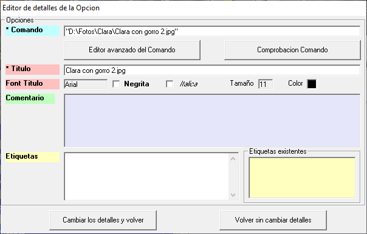
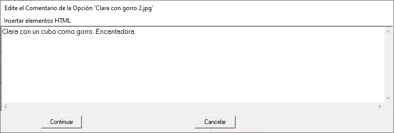
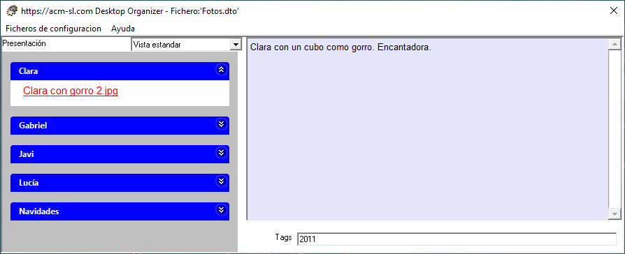

Añadir una Opción a un Grupo por el método de "Arrastrar y Soltar" un fichero.
- Usando el Explorador de Windows, o cualquier otro programa que permita explorar el sistema de discos, seleccione el documento para que queremos crear la Opción.
Pulse sobre él con el botón izquierdo del ratón y, sin dejar apretar el botón, mueva el ratón sobre el Grupo que donde quiera crear la Opción, y entonces "suéltelo" (deje de apretar el botón del ratón).
Aparecerá el siguiente formulario, parcialmente rellenado con datos del fichero elegido.

El Título es el texto que aparecerá en la Opción.
El Comando debe contener:
a) en el caso de acceso a un documento, su localización en el sistema de archivos.
b) en el caso de una aplicación (ejecutable), la dirección de la misma seguida del conjunto de parámetros que se deseen. Para este ultimo caso, consultar "Asociar parámetros al Comando de una Opción".
El Comentario se puede modificar colocando el ratón sobre la caja de texto (fondo azul) asociado a Comentario ,y pulsando el botón derecho: aparecerá formulario siguiente, donde debe introducir el texto del comentario deseado.

Pulse el botón "Continuar" (o "Cancelar" para no cambiar el Comentario).
Puede también cambiar las Etiquetas, tecleando directamente en la caja de texto asociado al rotulo "Etiquetas". Ver la siguiente figura.
- Pulsando el botón "Cambiar los detalles y volver", aunque previamente el programa le pedirá que compruebe si el comando es correcto, para lo que deberá pulsar el botón "Comprobar comando", y cerciorarse de que el documento aparece correctamente en la aplicación que tenga asociada. Responda "Si" a la pregunta que le haga, caso de que todo vaya bien. Aparecerá la Opción creada en el formulario principal.
